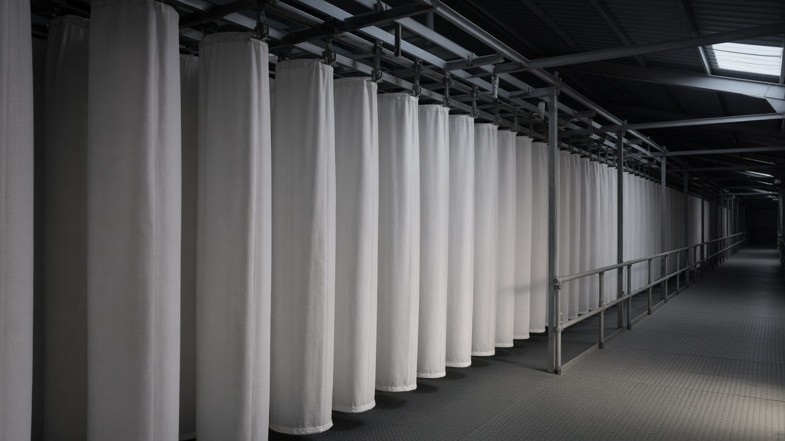
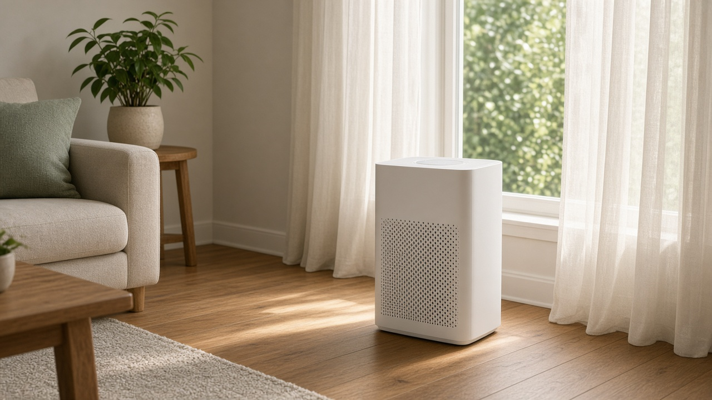
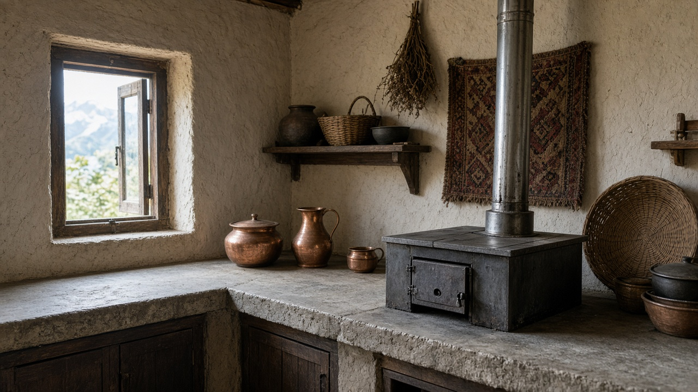

Clean Air Technology and Filtration Systems
Published on August 20, 2026

Clean air technologies reduce pollutant concentrations at the source, along transmission pathways, and at the point of exposure indoors and outdoors. Industrial scrubbers, electrostatic precipitators, and fabric filters capture particulate matter and acid gases from power plant and factory exhaust streams before they enter the atmosphere. Catalytic converters and diesel particulate filters on vehicles oxidize or trap harmful emissions from combustion engines. Selective catalytic reduction systems remove nitrogen oxides from flue gas using ammonia or urea injection, achieving removal efficiencies above ninety percent when properly maintained.
Indoor air quality relies on ventilation, source control, and filtration through high-efficiency particulate air filters that remove at least 99.97 percent of particles 0.3 micrometers in diameter. Portable air purifiers, building heating and cooling system upgrades, and negative-pressure isolation rooms protect occupants in homes, schools, hospitals, and workplaces. Emerging technologies include photocatalytic surfaces that degrade volatile organic compounds, bipolar ionization, and ultraviolet germicidal irradiation for pathogen control alongside particle removal. Smart sensors integrate with automated filtration to adjust fan speeds based on real-time PM2.5 and CO2 readings.
Deploying clean air technology effectively requires matching equipment to pollutant profiles, maintaining filters on schedule, and verifying performance through independent testing rather than marketing claims alone. Life-cycle analysis considers energy consumption and filter disposal impacts to avoid shifting burdens from air quality to carbon emissions or waste streams. Policy incentives such as subsidies for clean cookstoves, emission retrofit grants, and green building certifications accelerate adoption. Combining source reduction with advanced filtration helps communities achieve breathable air during both routine conditions and extreme pollution events. Research continues on next-generation materials such as activated carbon composites and nanofiber membranes that capture ultrafine particles with lower energy demand.

सफा वायु प्रविधिहरूले स्रोतमा, यातायात मार्गहरूमा र घरभित्र तथा बाहिरी संपर्क बिन्दुमा प्रदूषक सान्द्रता घटाउँछन्। औद्योगिक स्क्रबर, स्थिर विद्युत अवक्षेपक र कपडा फिल्टरले विद्युत केन्द्र र कारखानाको निकास धाराबाट कणिका पदार्थ र अम्ल ग्याँस वायुमण्डलमा प्रवेश गर्नु अघि समात्छन्। सवारी साधनमा उत्प्रेरक परिवर्तक र डिजेल कणिका फिल्टरले दहन इन्जिनका हानिकारक उत्सर्जनलाई अक्सिडाइज वा फस्याउँछन्। चयनात्मक उत्प्रेरक न्यूनीकरण प्रणालीले अमोनिया वा युरिया इन्जेक्सन प्रयोग गरी धुवाँ ग्याँसबाट नाइट्रोजन अक्साइड हटाउँछ, र उचित मर्मतमा नब्बे प्रतिशतभन्दा बढी हटाउने दक्षता प्राप्त हुन्छ।
घरेलु वायु गुणस्तर वेन्टिलेसन, स्रोत नियन्त्रण र HEPA फिल्टरमार्फत फिल्ट्रेसनमा निर्भर छ, जसले ०.३ माइक्रोमिटर व्यासका कणहरूको कम्तिमा ९९.९७ प्रतिशत हटाउँछ। पोर्टेबल वायु शुद्धिकरण यन्त्र, भवन HVAC सुधार र ऋणात्मक चाप अलग कोठाले घर, विद्यालय, अस्पताल र कार्यस्थलका बासिन्दालाई सुरक्षित राख्छ। उदीयमान प्रविधिहरूमा अस्थिर कार्बनिक यौगिकहरू अपघटन गर्ने प्रकाश-उत्प्रेरक सतह, द्विध्रुव आयनिकरण र UV कीटाणु नाशी विकिरण समावेश छ, जसले कण हटाउँदै रोगजनक नियन्त्रण गर्छ। बुद्धिमान सेन्सरहरू स्वचालित फिल्ट्रेसनसँग जोडिएर वास्तविक-समय PM2.5 र CO2 रिडिङअनुसार पङ्खाको गति मिलाउँछन्।
सफा वायु प्रविधि प्रभावकारी रूपमा तैनाउन प्रदूषक प्रोफाइल अनुसार उपकरण मिलाउने, फिल्टर नियमित मर्मत गर्ने र मात्र मार्केटिङ दाबी होइन स्वतन्त्र परीक्षणमार्फत प्रदर्शन प्रमाणित गर्ने आवश्यक छ। जीवन-चक्र विश्लेषणले ऊर्जा खपत र फिल्टर फाल्ने प्रभावलाई विचार गर्छ ताकि वायु गुणस्तरबाट कार्बन उत्सर्जन वा फोहोर धाराहरू बोझ सर्न नदिइयोस्। स्वच्छ चुलो अनुदान, उत्सर्जन पुनः उपकरण अनुदान र हरित भवन प्रमाणीकरण जस्ता नीतिगत प्रोत्साहनले अपनाउने दर बढाउँछ। स्रोत न्यूनीकरण र उन्नत फिल्ट्रेसन मिलाएर समुदायहरूले सामान्य अवस्था र अत्यधिक प्रदूषण दुवैमा श्वास-योग्य वायु प्राप्त गर्न सक्छन्। सक्रिय कार्बन समग्र पदार्थ र नानो फाइबर झिल्ली जस्ता अर्को पुस्ताका सामग्रीमा अनुसन्धान जारी छ, जसले कम ऊर्जा मागमा अति सूक्ष्म कण समात्छ।

स्वच्छ वायु प्रौद्योगिकियाँ स्रोत पर, परिवहन मार्गों में और घर के अंदर व बाहर संपर्क बिंदु पर प्रदूषक सांद्रता घटाती हैं। औद्योगिक स्क्रबर, स्थिर विद्युत अवक्षेपक और कपड़ा फिल्टर बिजली संयंत्र और कारखाने की निकास धारा से कण पदार्थ और अम्लीय गैसों को वायुमंडल में प्रवेश करने से पहले पकड़ते हैं। वाहनों पर उत्प्रेरक परिवर्तक और डीजल कण फिल्टर दहन इंजन के हानिकारक उत्सर्जन को ऑक्सीकृत या फँसाते हैं। चयनात्मक उत्प्रेरक अपघटन प्रणालियाँ अमोनिया या यूरिया इंजेक्शन से धुएँ की गैस से नाइट्रोजन ऑक्साइड हटाती हैं, और उचित रखरखाव पर नब्बे प्रतिशत से अधिक हटाने की दक्षता प्राप्त होती है।
भीतरी वायु गुणवत्ता वेंटिलेशन, स्रोत नियंत्रण और HEPA फ़िल्टर के माध्यम से फ़िल्ट्रेशन पर निर्भर करती है, जो ०.३ माइक्रोमीटर व्यास के कणों का कम से कम ९९.९७ प्रतिशत हटाते हैं। पोर्टेबल वायु शोधक, भवन HVAC सुधार और ऋणात्मक दाब वाले अलग कमरे घर, स्कूल, अस्पताल और कार्यस्थलों में रहने वालों की रक्षा करते हैं। उभरती प्रौद्योगिकियों में अस्थिर कार्बनिक यौगिकों को अपघटित करने वाली प्रकाश-उत्प्रेरक सतहें, द्विध्रुव आयनिकरण और UV कीटाणु-नाशी विकिरण शामिल हैं, जो कण हटाने के साथ रोगजनकों पर भी नियंत्रण करते हैं। स्मार्ट सेंसर स्वचालित फ़िल्ट्रेशन से जुड़कर वास्तविक-समय PM2.5 और CO2 रीडिंग के आधार पर पंखे की गति समायोजित करते हैं।
स्वच्छ वायु प्रौद्योगिकी को प्रभावी रूप से तैनात करने के लिए प्रदूषक प्रोफ़ाइल के अनुसार उपकरण मिलाना, फ़िल्टर का नियमित रखरखाव और केवल विपणन दावों पर निर्भर रहने के बजाय स्वतंत्र परीक्षण से प्रदर्शन सत्यापित करना आवश्यक है। जीवन-चक्र विश्लेषण ऊर्जा खपत और फ़िल्टर निपटान के प्रभावों पर विचार करता है ताकि वायु गुणवत्ता से कार्बन उत्सर्जन या कचरे की धाराओं पर बोझ न सर जाए। स्वच्छ चूल्हे अनुदान, उत्सर्जन पुनः-उपकरण अनुदान और हरित भवन प्रमाणन जैसे नीतिगत प्रोत्साहन अपनाने की गति बढ़ाते हैं। स्रोत में कमी और उन्नत फ़िल्ट्रेशन को मिलाकर समुदाय सामान्य और अत्यधिक प्रदूषण दोनों स्थितियों में श्वास-योग्य हवा प्राप्त कर सकते हैं। सक्रिय कार्बन समग्र और नैनो फाइबर झिल्ली जैसी अगली पीढ़ी की सामग्रियों पर अनुसंधान जारी है, जो कम ऊर्जा माँग पर अति-सूक्ष्म कण पकड़ती हैं।